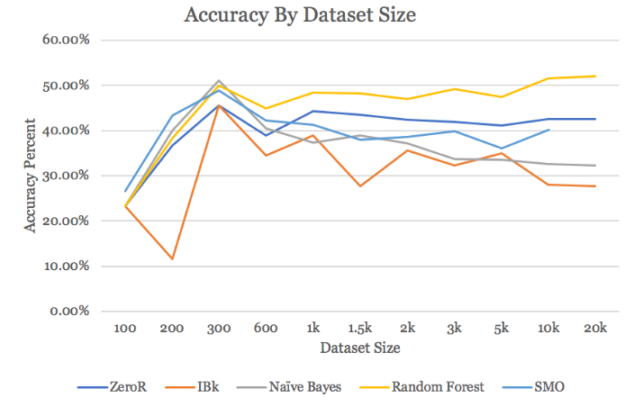

We were aware that there would be problems with overfitting the data due to the massive amount we were able to collect, so we started with small samples and grew them until we were plateauing. All classification models and filtering was done using Weka. We preprocessed the data by first eliminating all attributes besides genre and lyrics. We decided our task should be focused on lyrics, and wanted to create a classifier that was forced to work with minimal amounts of data and work with instances where year, popularity, etc. were not provided. We then eliminating all punctuation, leaving just alphanumeric characters.
We then used Weka’s StringToWordVector filter to create numeric attributes from our string data. We adjusted some settings from the default, utilizing an IDF-TF transformation to get a better sense of word importance. The attribute fields were limited to about 1000 attributes, and we used Weka’s built in Rainbow stopword handler. We analyzed three different classifications, Naïve Bayes, Random Forest, and Support Vector Classifier (Weka’s SMO). We also used ZeroR and 1 Nearest Neighbor as control. For each classifier, we trained on 70% of the data and tested on the other 30%.
Starting with just 100 instances, almost all the results were the same, and quite low. When the dataset was around 300, we started to see more accurate results, as the ZeroR classifier started to plateau, thus was finally acting more as a control. At this small dataset, Naïve Bayes was performing very well, with over 50% accuracy. The other two classifiers were also performing well, with Random Forest at exactly 50% and SMO just under 50%. 300 and 600 were the only datasets were all three classifiers were performing better than ZeroR.
Once the dataset grew to be over 1,000, Naïve Bayes started to overfit, and its accuracy was continuously lower than ZeroR for every test greater than 1,000. SMO also started to overfit, although not quite to the same degree as Naïve Bayes. Interestingly, SMO started to do better again later on, when the dataset sizes grew to over 10,000, but Weka unfortunately did not have enough resources to run SMO on 20,000.
| Data Size | ZeroR | IBk | Naive Bayes | Random Forest | SMO |
|---|---|---|---|---|---|
| 100 | 23.3333 | 23.3333 | 23.3333 | 23.3333 | 26.6667 |
| 200 | 36.6667 | 11.6667 | 40.0000 | 38.3333 | 43.3333 |
| 300 | 45.5556 | 45.5556 | 51.1111 | 50.0000 | 48.8889 |
| 600 | 38.8889 | 34.4444 | 40.5556 | 45.0000 | 42.2222 |
| 1,000 | 44.3333 | 39.0000 | 37.3333 | 48.3333 | 41.3333 |
| 1,500 | 43.5556 | 27.6667 | 38.8889 | 48.2222 | 38.0000 |
| 2,000 | 42.3756 | 35.6667 | 37.2392 | 47.0305 | 38.6667 |
| 3,000 | 42.0000 | 32.3333 | 33.7778 | 49.2222 | 39.8889 |
| 5,000 | 41.2000 | 34.9333 | 33.6000 | 47.4667 | 36.1333 |
| 10,000 | 42.5000 | 28.0333 | 32.6333 | 51.5333 | 40.2333 |
| 20,000 | 42.5333 | 27.7000 | 32.3167 | 51.9667 | ----- |
performance of classifiers (accuracy percentage) on varying dataset sizes
performance of classifier methods on varying dataset sizes
The only classifier that continued to do well was Random Forest, for a number of reasons. The first is its resistance to overfitting. Random Forests build an ensemble of smaller trees, then vote between the trees when classifying data. This is particularly good for text classification, as representing the strings as word vectors creates a massive amount of attributes which can be incredibly noisey.
It was surprising that all our classifiers failed to obtain much more than 50%; this is below what we were expecting. This could be because the classification of genre by metrolyrics is not accurate, and we unfortunately have no way to ensure this accuracy. However, this could also be due to songs not having as cliché of lyrics as expected, and perhaps the genres are not as different as we thought. A better dataset is essential for future work, as it is uncertain if the poor results come from a bad dataset, or just the difficulty of the task.